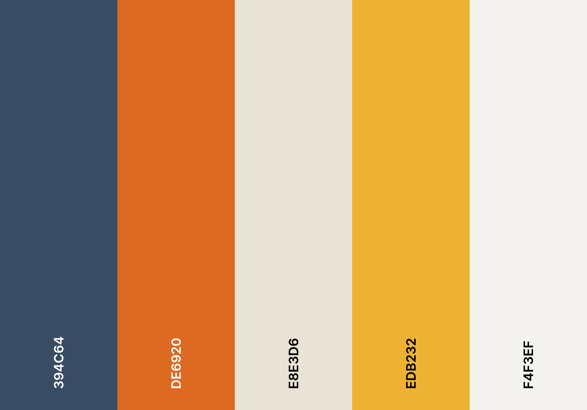

Site Plan
Site name will be Felis-Catus-R-Us and the domain name will be feliscatus-r-us.org
Target Audience
This site would be for every animal lover out there who wants to learn more about the domestic cat or are interested in purchasing one.
This site will do the following:
- - Put the various misconceptions about the domestic cat to rest.
- - Inform others about the domestic cat and its various breeds.
- - Teach about how to care for the unique needs of each cat.
- - Help cat owners live in harmony with their furry little friend.
Site Design:
This website's Primary, Secondary, and Tertiary font types will be Georgia, Helvetica, and Arial, in that order.
This website's color scheme will match the colors of the color pallete below.
